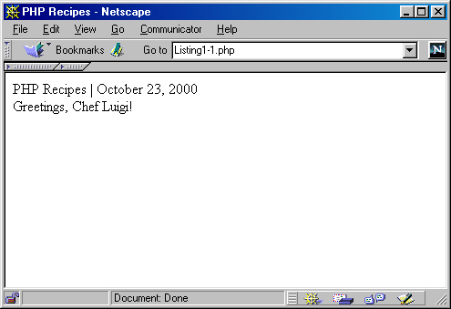

ГЛАВА 1
Знакомство с РНР
Последние пять лет ознаменовались фантастическим развитием Интернета и новых способов общения между людьми. На переднем крае этого явления находится World Wide Web (WWW). Ежедневно в этой новой коммуникационной среде открываются тысячи новых сайтов, а потребителям предлагаются новые виды услуг. Вместе с бурным развитием рынка появился огромный спрос на новые технологии и разработчиков, владеющих ими. Если вы читаете этот абзац, вероятно, вы уже являетесь или скоро станете web-разработчиком. Впрочем, какой бы ни была ваша профессия, вы выбрали эту книгу потому, что слышали о замечательной новой технологии — РНР.
В этой главе вы познакомитесь с языком РНР, получите представление о его истории и возможностях, а также основную информацию, необходимую для разработки сайтов с поддержкой РНР. Надеюсь, приведенные примеры пробудят ваш энтузиазм и наглядно покажут, какие перспективы РНР открывает перед вами и вашей организацией. Вы узнаете, как установить и настроить программное обеспечение РНР на компьютерах с Linux/UNIX или Windows и как внедрить РНР в HTML. К концу главы вы будете готовы к тому, чтобы углубленно заняться изучением других важных аспектов языка РНР. Итак, зажигайте свет, включайте свою любимую музыку и устраивайтесь поудобнее. Пришла пора познакомиться с тем, что станет одним из важнейших пунктов в вашем резюме, - с программированием на РНР.
История РНР начинается с 1995 года, когда независимый программист-контрактник по имени Расмус Лердорф (Rasmus Lerdorf) написал сценарий Perl/CGI для подсчета количества посетителей сайта, прочитавших его онлайновое резюме. Его сценарий решал две задачи: регистрацию данных посетителя и вывод количества посетителей на web-странице. Развитие WWW еще только начиналось, никаких специальных средств для решения этих задач не было, и к автору хлынул поток сообщений с вопросами. Лердорф начал бесплатно раздавать свой инструментарий, названный Personal Home Page (РНР) или Hypertext Processor (гипертекстовый процессор).
Шумный успех инструментария РНР заставил Лердорфа приступить к разработке расширений РНР. Одно из расширений преобразовывало данные, введенные на форме HTML, в символические переменные, что позволяло экспортировать их в другие системы. Чтобы добиться поставленной цели, Лердорф решил в дальнейших разработках перейти с Perl на С. Расширение существующего инструментария РНР привело к появлению РНР 2.0, или PHP-FI (Personal Home Page — Form Interpretator). В усовершенствовании версии 2.0 принимали участие программисты со всего мира.
Новая версия РНР пользовалась исключительной популярностью, и вскоре образовалась основная команда разработчиков. Они сохранили исходную концепцию внедрения программного кода прямо в HTML и переписали заново механизм лексического анализа, что привело к появлению РНР 3.0. К моменту выхода версии 3.0 в 1997 году свыше 50 000 пользователей применяли РНР для улучшения своих web-страниц.
 В
1997 году было решено, что сокращение РНР
должно означать не «Personal Home page», а «РНР Hypertext
Processor»
В
1997 году было решено, что сокращение РНР
должно означать не «Personal Home page», а «РНР Hypertext
Processor»
В течение следующих двух лет стремительное развитие РНР продолжалось. В язык добавлялись сотни новых функций, а количество пользователей стремительно росло. В начале 1999 года служба Netcraft (http://www.netcraft.com) сообщила о том, что, по минимальным оценкам, число пользователей РНР превысило 1 000 000, в результате чего РНР стал одним из самых популярных сценарных языков в мире.
В начале 1999 года было объявлено о предстоящем выходе РНР 4.0. Хотя одной из сильнейших сторон РНР была эффективность выполнения сценариев, при первоначальных разработках не предполагалось, что на базе РНР будут строиться крупномасштабные приложения. По этой причине была начата работа над более устойчивым механизмом лексического анализа, больше известным под названием Zend (http://www.zend.com). Работа шла быстро и завершилась 22 мая 2000 года выпуском РНР версии 4.0.
Кроме лексического анализатора Zend, компания Zend Technologies (Израиль) распространяет оптимизатор Zend, который повышает выигрыш в быстродействии от применения лексического анализатора Zend. Тесты показывают, что ускорение работы программы в результате использования оптимизатора составляет от 40 до 100 %. За дополнительной информацией обращайтесь на сайт Zend.
На момент написания этой книги, по данным Netcraft (http://www.netcraft.com), программное обеспечение РНР было установлено более чем в 3,6 миллиона доменов. Будущее РНР выглядит светлым, поскольку продукт продолжает активно использоваться как на крупных web-сайтах, так и на компьютерах отдельных пользователей.
РНР лучше всего охарактеризовать как работающий на стороне сервера встроенный язык сценариев Web, позволяющий разработчикам быстро и эффективно строить динамические web-приложения. С позиций грамматики и синтаксиса РНР напоминает язык программирования С, хотя разработчики не постеснялись включить в него средства из других языков, в том числе из Perl, Java и C++. Среди ценных заимствованных возможностей — поддержка регулярных выражений, мощные средства работы с массивами, объектно-ориентированная методология и обширная поддержка работы с базами данных.
При написании приложений, выходящих за рамки традиционной, статической методологии разработки web-страниц (то есть HTML), РНР также может послужить ценным инструментом для создания и управления динамическим содержанием, который используется наряду с JavaScript, стилями, WML (Wireless Markup Language) и другими полезными языками. Благодаря наличию сотен стандартных функций РНР в состоянии решить практически любую задачу, которая может придти в голову разработчику. В нем имеется обширная поддержка создания графики и операций с ней, математических вычислений, средств электронной коммерции и таких популярных технологий, как XML (Extensible Markup Language), ODBC (Open Database Connectivity) и Macromedia Shockwave. Широкий выбор возможностей избавляет от необходимости рутинной и непростой работы по подключению сторонних модулей, поэтому многие разработчики со всего мира останавливают свой выбор на РНР.
Одним из главных достоинств РНР является тот факт, что он внедряется прямо в HTML-код, поэтому программисту не приходится писать программу с множеством команд для простого вывода HTML. Код HTML и РНР можно чередовать по мере необходимости. РНР позволяет написать фрагмент следующего вида:
<html>
<title><? print "Hello world!"; ?></title>
</html>
Сообщение "Hello world!" выводится в заголовке web-страницы. Интересно то, что команда print внутри конструкции, которая обычно называется экранирующими последовательностями РНР (<?...?>), представляет собой законченную программу. Ни длинного кода инициализации, ни включения библиотек — программа состоит лишь из того кода, который непосредственно решает поставленную задачу!
Конечно, для выполнения сценариев РНР необходимо предварительно установить и настроить программное обеспечение РНР на сервере. Этот процесс описан в разделе «Загрузка и установка РНР/Apache» настоящей главы. Разделу предшествуют фрагменты из отзывов нескольких пользователей, выступающих в пользу РНР, с кратким обзором языка и его истории. Но прежде чем браться за процесс установки, мы познакомимся с некоторыми характеристиками РНР. Этой теме посвящен следующий раздел.
Характеристики РНР
Как вы, вероятно, уже поняли, главным фактором при проектировании языка РНР является практичность. РНР должен предоставить программисту средства для быстрого и эффективного решения поставленных задач. Практический характер РНР обусловлен пятью важными характеристиками:
Существует еще одна «характеристика», которая делает РНР особенно привлекательным: он распространяется бесплатно!
ТрадиционностьЯзык РНР кажется знакомым программистам, работающим в разных областях. Многие конструкции языка позаимствованы из Си Perl, а нередко код РНР практически неотличим от того, что встречается в типичных программах С или Pascal. Это заметно снижает начальные усилия при изучении РНР.
ПростотаСценарий РНР может состоять из 10 000 строк или из одной строки — все зависит от специфики вашей задачи. Вам не придется подгружать библиотеки, указывать специальные параметры компиляции или что-нибудь в этом роде. Механизм РНР просто начинает выполнять код после первой экранирующей последовательности (<?) и продолжает выполнение до того момента, когда он встретит парную экранирующую последовательность (?>). Если код имеет правильный синтаксис, он исполняется в точности так, как указал программист.
ЭффективностьЭффективность является исключительно важным фактором при программировании для многопользовательских сред, к числу которых относится и WWW. В РНР 4.0 был реализован механизм выделения ресурсов и обеспечена улучшенная поддержка объектно-ориентированного программирования, а также средства управления сеансом. В последней версии появился и механизм подсчета ссылок (reference counting), предотвращающий выделение лишней памяти.
БезопасностьРНР предоставляет в распоряжение разработчиков и администраторов гибкие и эффективные средства безопасности, которые условно делятся на две категории: средства системного уровня и средства уровня приложения.
Средства безопасности системного уровня
В РНР реализованы механизмы безопасности, находящиеся под управлением администраторов; при правильной настройке РНР это обеспечивает максимальную свободу действий и безопасность. РНР может работать в так называемом безопасном режиме (safe mode), который ограничивает возможности применения РНР пользователями по ряду важных показателей. Например, можно ограничить максимальное время выполнения и использование памяти (неконтролируемый расход памяти отрицательно влияет на быстродействие сервера). По аналогии с cgi-bin администратор также может устанавливать ограничения на каталоги, в которых пользователь может просматривать и исполнять сценарии РНР, а также использовать сценарии РНР для просмотра конфиденциальной информации на сервере (например, файла passwd).
Средства безопасности уровня приложения
В стандартный набор функций РНР входит ряд надежных механизмов шифрования. РНР также совместим с многими приложениями независимых фирм, что позволяет легко интегрировать его с защищенными технологиями электронной коммерции (e-commerce). Другое преимущество заключается в том, что исходный текст сценариев РНР нельзя просмотреть в браузере, поскольку сценарий компилируется до его отправки по запросу пользователя. Реализация РНР на стороне сервера предотвращает похищение нетривиальных сценариев пользователями, знаний которых хватает хотя бы для выполнения команды View Source.
Тема безопасности настолько важна, что ей посвящена целая глава. За подробной информацией о средствах безопасности РНР обращайтесь к главе 16.
Поскольку РНР является встраиваемым (embedded) языком, он отличается исключительной гибкостью по отношению к потребностям разработчика. Хотя РНР обычно рекомендуется использовать в сочетании с HTML, он с таким же успехом интегрируется и в JavaScript, WML, XML и другие языки. Кроме того, хорошо структурированные приложения РНР легко расширяются по мере необходимости (впрочем, это относится ко всем основным языкам программирования).
Нет проблем и с зависимостью от браузеров, поскольку перед отправкой клиенту сценарии РНР полностью компилируются на стороне сервера. В сущности, сценарии РНР могут передаваться любым устройствам с браузерами, включая сотовые телефоны, электронные записные книжки, пейджеры и портативные компьютеры, не говоря уже о традиционных PC. Программисты, занимающиеся вспомога-тельными утилитами, могут запускать РНР в режиме командной строки.
Поскольку РНР не содержит кода, ориентированного на конкретный web-сервер, пользователи не ограничиваются определенными серверами (возможно, незнакомыми для них). Apache, Microsoft IIS, Netscape Enterprise Server, Stronghold и Zeus — РНР работает на всех перечисленных серверах. Поскольку эти серверы работают на разных платформах, РНР в целом является платформенно-незави-симым языком и существует на таких платформах, как UNIX, Solaris, FreeBSD и Windows 95/98/NT.
Наконец, средства РНР позволяют программисту работать с внешними компонентами, такими как Enterprise Java Beans или СОМ-объекты Win32. Благодаря
этим новым возможностям РНР занимает достойное место среди современных технологий и обеспечивает масштабирование проектов до необходимых пределов.
Стратегия Open Source наделала немало шуму в программной отрасли. Распространение исходных текстов программ в массах оказало несомненно благотворное влияние на многие проекты, в первую очередь — Linux, хотя и успех проекта Apache сильно подкрепил позиции сторонников Open Source. Сказанное относится и к истории создания РНР, поскольку поддержка пользователей со всего мира оказалась очень важным фактором в развитии проекта РНР.
Принятие стратегии Open Source и бесплатное распространение исходных текстов РНР оказало неоценимую услугу пользователям. Вдобавок, отзывчивое сообщество пользователей РНР является своего рода «коллективной службой поддержки», и в популярных электронных конференциях можно найти ответы даже на самые сложные вопросы.
В следующем разделе «Рекомендации пользователей» приведены свидетельства трех видных профессионалов в области web-разработок. Из них становится ясно, почему они считают РНР такой замечательной технологией.
«Мы в течение долгого времени поддерживали личные контакты с некоторыми разработчиками РНР и вели с ними обширную переписку. Когда у разработчиков РНР возникали какие-то проблемы, относящиеся к MySQL, мы всегда были готовы помочь им в поиске решения. Кроме того, мы включили в MySQL несколько новых возможностей лишь для того, чтобы улучшить его интеграцию с РНР. Результатом наших усилий стало то, что MySQL превосходно работает с РНР, — и мы позаботимся о том, чтобы это положение сохранилось и в будущем!»
Майкл «Монти» Видениус (Michael «Monty» Widenius),
разработчик MySQL
«Выбор РНР для реализации mp3.lycos.com был обусловлен несколькими причинами. Главной причиной стали сжатые сроки работы над проектом — ведь РНР ускоряет процесс разработки. Другой причиной была высокая эффективность — мы перешли от 0 к 1,4 миллиона посещений в сутки, и РНР с этим прекрасно справился. Третья причина заключалась в том, что я твердо знал: если на стадии тестирования с повышенной нагрузкой в РНР обнаружатся какие-либо ошибки, я смогу их самостоятельно исправить, поскольку РНР распространяется вместе с исходными текстами».
Стиг Баккен (Stig Bakken),
FAST Search & Transfer ASA
«Я использовал РНР с первых дней, еще с версии PHP/FI 1.x. Мне понравилось, что я могу обрабатывать формы и настраивать страницы «на ходу» при помощи такого простого языка. Вместе с потребностями моей компании развивался и РНР.
В наши дни РНР обладает исключительно богатыми возможностями. Мы используем его практически во всех создаваемых web-сайтах, включая 32bit.com и DevShed.com. Мы даже воспользовались им в Info West для реализации службы поддержки, управления учетными записями и отслеживания портов.
Эволюция РНР и признание его мировым сообществом — классический пример успешного ведения проекта с открытыми исходными текстами. Широта взглядов создателей, поддержка сообщества и хорошее сопровождение кодовой базы привели РНР к успеху, о котором многие коммерческие проекты могут лишь мечтать. Я с оптимизмом смотрю в будущее РНР и рекомендую каждому web-разработчику попробовать его в деле. Возможно, вы, как и я, уже не расстанетесь с ним».
Рэнди Косби (Randy Cosby),
президент nGenuity, Inc. DevShed
Пример, приведенный в листинге 1.1, наглядно показывает, как легко РНР интегрируется с HTML-кодом.
Листинг 1.1. Создание динамической страницы РНР<?
// Присвоить значения нескольким переменным
$site_title = "РНР Recipes";
$bg_color = "white";
$user_name = "Chef Luigi";
?>
<html>
<head>
<title><? print $site_title; ?></title>
</head>
<body bgcolor="<? print $bg color; ?>" >
<?
// Вывести приветствие с датой и именем пользователя. print "
РНР Recipes | ".dateC'F d. Y")." <br> Greetings, $user_name! <br>
";
?>
</body>
</html>
На рис. 1.1 показано, как выглядит сценарий при выполнении в браузере.

Рис. 1.1. Результаты выполнения сценария в браузереНеплохо, правда? Я уверен, что читатель уже перебирает в уме новые возможности. Но не будем торопиться — возможно, вам еще придется установить и настроить РНР на своем компьютере. Этой теме посвящены следующие разделы.
Загрузка РНР/Apache
Прежде чем следовать дальше, я рекомендую потратить немного времени на загрузку, установку и настройку РНР и web-сервера на вашем компьютере. Хотя РНР совместим с разными web-серверами, я предполагаю, что вы используете Apache — во-первых, это самый популярный web-сервер на сегодняшний день, во-вторых, он чаще всего работает с РНР. Впрочем, в целом процессы установки для разных web-серверов имеют много общего.
Поставку РНР можно загрузить с официального сайта РНР или с любого из «зеркальных» сайтов по всему миру. Самый свежий список «зеркальных» сайтов находится по адресу http://www.php.net. При загрузке РНР можно выбрать один из двух форматов:
Исполняемый формат Win32 предназначен для пользователей Windows 95/98/ NT/2000. Хотя исходный текст можно откомпилировать и на платформе Windows, для большинства пользователей это необязательно. Впрочем, если вы настаиваете на компиляции (кстати, в книге этот процесс не рассматривается), вам понадобится компилятор Visual C++ одной из последних версий. За подробностями компиляции обращайтесь по адресу http://www.php.net/ version4/win32build.php. Установка исполняемых файлов Win32 описана далее в этой главе.
Пользователям других систем придется самостоятельно откомпилировать исходный текст программы. Хотя многих новичков эта перспектива приводит в ужас, на самом деле это довольно просто. Возможно, вас интересует, распространяется ли РНР в формате RPM (RedHat Package Manager)? Да, распространяется, хотя эти пакеты не представлены на официальном сайте РНР. За инструкциями и дополнительной информацией о местонахождении различных поставок обращайтесь к материалам электронных конференций. Обобщенный процесс компиляции рассматривается далее.
Зайдите на сайт http://www.php.net и загрузите с него ту поставку, которая лучше всего отвечает вашим потребностям. Время загрузки зависит от типа и скорости подключения. Кроме того, имеется возможность получить документацию. Я настоятельно рекомендую выбрать самую новую версию.
Если вы еще не установили сервер Apache, вам также следует выбрать его последнюю версию. Пакеты находятся в каталоге http://www.apache.org/dist/binaries, содержащем подкаталоги для разных операционных систем. Загрузите вариант, соответствующий вашим потребностям. Подробное описание настройки РНР для всех существующих платформ и web-серверов выходит за рамки этой книги, поэтому я уделю основное внимание серверу Apache. Независимо от того, какой web-сервер вы собираетесь использовать, я рекомендую прочитать дальнейшие разделы, посвященные настройке, — вы получите некоторое представление о тех общих проблемах, с которыми можете столкнуться.
Установка новых программ нередко превращается в непростое испытание для новичков. Однако разработчики РНР предприняли дополнительные усилия для того, чтобы установка РНР проходила относительно просто. В следующих разделах перечислены действия, которые необходимо выполнить для установки и настройки РНР в Win32 и на других платформах.

Предполагается, что к настоящему моменту вы успешно загрузили РНР и Apache. Следующий шаг — выбор способа установки. Для компьютеров, не использующих систему Windows, существует три варианта: двоичный файл CGI, статический модуль Apache и динамический модуль Apache. Скорее всего, вы не захотите строить РНР в виде двоичного файла CGI. Более того, построение РНР в виде серверного модуля имеет некоторые преимущества, поэтому я уделю внимание построению РНР в виде статического и динамического модуля. Главное различие между этими двумя вариантами заключается в том, что при любых изменениях в статическом модуле РНР придется заново компилировать и Apache, и РНР, а изменения в динамическом модуле РНР потребуют компиляции только РНР, без сервера.
На компьютерах с системой Windows РНР может устанавливаться в виде либо двоичного файла CGI, либо статического модуля Apache. На этот раз я опишу построение двоичного файла CGI, потому что пользователи Windows обычно используют вместо Apache другие web-серверы (например, Microsoft Internet Information Server или Microsoft Personal Web Server). CGI-версия легко интегрируется с этими серверами. Хотя описанный процесс установки относится к РНР/Apache, установка для перечисленных выше web-серверов выполняется практически так же.
Системы, не входящие в семейство Windows
Независимо от того, какой вариант был выбран, установка начинается с распаковки архивов. Для распаковки выполните два простых действия:
gunzip apache_1.3.9.tar.gz
gunzip php-4.0.0.tar.gz
После завершения распаковки остаются файлы с расширением *.tar.
tar -zxvf apache_1.3.x.tar
tar -zxvf php-4.0.x.tar
С этого момента начинается основной процесс установки.
Модуль Apache
Установка РНР в виде модуля Apache выполняется довольно просто. Ниже подробно описаны все необходимые действия:
cd apache_1.3.x
./configure -prefix=[путь]
./configure -with-apache=../apache_1.3.x -with-config-file-path=[путь]
make
make install
./configure -activate-module=src/modules/php4/libphp4.a
-other-configuration-options
make
make install
ServerName new.host.name
Приведите ее к следующему виду:
ServerName localhost
Затем найдите строки
#AddType application/x-httpd-php .php .php4
#AddType application/x-httpd-php-source .php .phps
Чтобы файлы с поддержкой РНР правильно работали на сервере, эти строки необходимо раскомментировать. Для этого достаточно удалить знак фунта (#) в начале каждой строки. Сохраните файл и поднимитесь в иерархии каталогов на один уровень вверх. Запустите сервер Apache следующей командой:
./bin/apachectl start
Voila! PHP и Apache готовы к работе. Для проверки сохраните приведенный ниже фрагмент в файле phpinfo.php в корневом каталоге документов Apache — каталоге htdocs, находящемся в установочном каталоге Apache:
<?
php info();
?>
Откройте файл в браузере на сервере. В окне появляется длинный перечень сведений о конфигурации РНР. Вы успешно установили РНР в виде модуля Apache.
Динамический модуль Apache
Динамические модули удобны тем, что они позволяют обновлять поставку РНР без перекомпиляции web-сервера. Apache рассматривает поддержку РНР как один
из своих многочисленных модулей вроде ModuleRewrite или ModuleSpelling. Этот вариант особенно хорош в ситуациях, когда в РНР позднее будет добавляться поддержка новых возможностей — например, шифрования. Все, что вам придется сделать — переконфигурировать/откомпилировать РНР с поддержкой шифрования, и вы сможете немедленно использовать новую возможность в web-приложениях. Процесс установки описан ниже:
cd apache_1.3.x
./configure -prefix=[путь] -enable-module=so -other-configuration-options
make
make install
ServerName new.host.name
Приведите ее к следующему виду:
ServerName local host
./configure -with-apxs=[путь/k/apxs]
make
make install
#AddType application/x-httpd-php .php .php4
#AddType application/x-httpd-php-source .php .phps
./bin/apachectl start
Voila! РНР и Apache готовы к работе.
Для проверки сохраните приведенный ниже фрагмент в файле phpinfo.php в корневом каталоге документов Apache — каталоге htdocs, находящемся в установочном каталоге Apache:
<?
php_info():
?>
Откройте файл в браузере на сервере. В окне появляется длинный перечень сведений о конфигурации РНР. Вы успешно установили РНР в виде динамического модуля Apache.
Если вам когда-нибудь приходилось устанавливать новые приложения в операционной системе Windows, вероятно, это не вызывало у вас особых трудностей. Вы щелкаете на нескольких кнопках, отвечаете на несколько вопросов — и все готово. Так же обстоит дело и с установкой Apache и РНР на компьютерах с системой Windows.
Замените yourname@yoursite.com правильными данными. Затем укажите правильное имя сервера (если его нет, воспользуйтесь именем localhost):
ServerName localhost
Если вы используете Windows NT, выберите в меню Пуск (Start) команду Install Apache as Service (NT Only). Затем вызовите панель управления, откройте окно Службы (Services), выберите Apache и щелкните на кнопке Пуск (Start). Apache запускается и будет запускаться автоматически при каждой последующей загрузке системы.
ScriptAlias /cgi-bin/ "C:/Apache/cgi-bin/"
Непосредственно под этой строкой введите следующую:
ScriptAlias /php4/ "C:/php4/"
Найдите секцию AddType. Вы увидите две закомментированные строки:
#AddType application/x-httpd-php3. phtml
#AddType application/x-httpd-php3-source .phps
Непосредственно под этими строками добавьте следующие:
AddType application/x-httpd-php .phtml .php
AddType application/x-httpd-php-source .phps
Прокрутите содержимое файла и найдите следующий закомментированный фрагмент:
#
# Action lets you define media types that will execute a script whenever
# a matching file is called. This eliminates the need for repeated URL
# pathnames for oft-used CGI file processors.
# Format: Action media/type /cgi-script/location
# Format: Action handler-name /cgi-script/location
#
Добавьте под этим фрагментом следующую строку:
Action application/x-httpd-php /php4/php.exe
Для проверки сохраните приведенный ниже фрагмент в файле phpinfo.php в корневом каталоге документов Apache — каталоге htdocs. Он находится в том каталоге, который был указан на шаге 2:
<?
php_info();
?>
 Хотя
при успешном завершении действий,
описанных выше, вы сможете использовать web-сервер
и РНР для тестирования, это еще не значит,
что ваш web-сервер будет доступен из World Wide Web.
За информацией по этому вопросу
обращайтесь на официальный сайт Apache (http://www.apache.org).
Более того, хотя описанная процедура
позволяет работать с пакетом РНР, вероятно,
вы захотите изменить конфигурацию РНР так,
чтобы она лучше соответствовала вашим
потребностям. Эта тема рассматривается в
следующем разделе «Конфигурация РНР».
Хотя
при успешном завершении действий,
описанных выше, вы сможете использовать web-сервер
и РНР для тестирования, это еще не значит,
что ваш web-сервер будет доступен из World Wide Web.
За информацией по этому вопросу
обращайтесь на официальный сайт Apache (http://www.apache.org).
Более того, хотя описанная процедура
позволяет работать с пакетом РНР, вероятно,
вы захотите изменить конфигурацию РНР так,
чтобы она лучше соответствовала вашим
потребностям. Эта тема рассматривается в
следующем разделе «Конфигурация РНР».
Откройте файл в браузере на сервере — в окне появляется длинный перечень сведений о конфигурации РНР.
Конфигурация РНР
РНР будет правильно работать и при конфигурации, выбранной по умолчанию, однако вы можете внести некоторые изменения, чтобы работа пакета лучше соответствовала вашим целям. Все параметры конфигурации находятся в файле php.ini, который по умолчанию копируется в каталог /usr/local/lib/ в процессе установки.
Независимо от платформы и web-сервера, используемого в сочетании с РНР, файл php.ini содержит одинаковый набор стандартных параметров, позволяющих управлять важными аспектами работы РНР. Этот файл содержит все параметры, определяющие поведение пакета при выполнении сценария РНР. Содержимое файла php.ini читается при запуске РНР.

Подробное описание всех конфигурационных параметров выходит за рамки этой книги, но некоторые директивы используются особенно часто и заслуживают отдельного упоминания. Другие параметры упоминаются в соответствующих местах следующих глав.
short_open_tag [on | off]
Параметр short_open_tab [on | off] определяет возможность использования коротких тегов <?...?> наряду со стандартными тегами.
asp_tags [on | off]
Параметр asp_tags [on | off] определяет возможность использования тегов в стиле ASP наряду со стандартными тегами. При использовании тегов в стиле ASP фрагменты кода РНР оформляются следующим образом:
<%
print "This is РНР code.";
%>
precision [integer]
Параметр precision [integer] задает количество значащих цифр, отображаемых в вещественных числах.
safe_mode [on | off]
Безопасный режим особенно удобен в случае, если в вашей системе работают несколько пользователей. Включение безопасного режима гарантирует, что пользователь не сможет применить сценарий РНР для получения доступа к другому файлу в системе — например, файлу passwd на компьютере Linux. Параметр safe_mode работает только в CGI-версии РНР. За дополнительной информацией по этой теме обращайтесь к главе 16.
max_execution_time [integer]
Параметр max_execution_time [integer] определяет максимальную продолжительность выполнения сценариев РНР в секундах. Такое ограничение предотвращает поглощение ценных системных ресурсов сценариями, содержащими ошибки.
error_reporting [1-8]
Параметр error_reporting [1-8] определяет уровень выдачи сообщений об ошибках в РНР. Чем выше значение, тем «чувствительнее» РНР реагирует на ошибки.
| Значение | Чувствительность |
| 1 | Обычные ошибки |
| 2 | Обычные предупреждения |
| 4 | Ошибки лексического анализатора |
| 8 | Замечания |
display_errors [on | off]
Параметр display_errors[on | off] управляет выводом информации об ошибках в браузере.
log_errors
Параметр log_errors определяет, следует ли регистрировать ошибки в файле. При включении параметра log_errors файл, в котором регистрируются ошибки, назначается при помощи параметра error_log.
error_log [filename]
Параметр error_log определяет файл, в котором регистрируются ошибки при включенном параметре log_errors.
magic_quotes_gpc
При активизации параметра magic_quotes_gpc все специальные символы, содержащиеся в пользовательских данных или в базе, автоматически экранируются обратной косой чертой. Кстати, сокращение gрс означает «get/post/cookie».
Лично я считаю, что параметр magic_quotes_gpc эффективнее отключить и использовать явное экранирование специальных символов. Какой бы способ вы ни выбрали, любые компромиссы приведут к порче данных. Если параметр magic_quotes_gpc
включен, никогда не экранируйте специальные символы обратной косой чертой; в противном случае не забывайте делать это всегда.
track_vars
Параметр track_vars включает отслеживание нескольких важных массивов сеансовых переменных, в том числе $HTTP_GET_VARS[], $HTTP_POST_VARS[], $HTTP_POST_FILES, $HTTP_COOKIE_VARS[], $HTTP_ENV_VARS[] и $HTTP_SERVER_VARS[]. Эти массивы подробно описаны в главе 13.
Помните, что кроме перечисленных параметров существует множество других. Выше перечислены лишь те параметры, которые часто применяются большинством пользователей. Многие параметры будут упоминаться в последующих главах.
Основные конструкции РНР
Прежде чем переходить к изложению основного материала, занимающего оставшуюся часть книги, я представлю несколько вспомогательных концепций, относящихся к РНР.
Переход в РНР
Механизм лексического анализа должен как-то отличать код РНР от других элементов страницы. Идентификация кода РНР называется «переходом в РНР» (escaping to РНР). Существуют четыре варианта оформления перехода в РНР:
Стандартные теги
Стандартные теги используются программистами РНР чаще остальных способов, что объясняется наглядностью и удобством этой формы записи:
<?php print "Welcome to the world of PHP!": ?>
У стандартных тегов есть еще одно дополнительное преимущество: за открывающей конструкцией <? следуют символы php, однозначно определяющие тип дальнейшего кода. Это удобно при использовании в одной странице нескольких технологий — таких, как JavaScript, серверные включения и РНР. Весь текст, расположенный до закрывающего тега ?>, интерпретируется как код РНР.
Короткие теги
Короткие теги обеспечивают наиболее компактную запись для перехода в РНР:
<? print "Welcome to the world of PHP!"; ?>
По умолчанию короткие теги не используются, их нужно специально активизировать. Это можно сделать двумя способами:
Теги script
Некоторые текстовые редакторы ошибочно принимают код РНР за код HTML (то есть визуально отображаемый текст), что нарушает работу над web-страницей. Проблема решается использованием тегов script:
<script language="php">
<?php print "Welcome to the world of PHP!"; ?>
</script>
Теги в стиле ASP
Четвертый и последний способ оформления внедренного кода РНР — теги в стиле ASP (Active Server Page). Они похожи на короткие теги, описанные выше, однако вместо вопросительного знака используется знак процента (%):
<%php print "Welcome to the world of PHP!"; %>
У тегов в стиле ASP есть одна особенность, делающая запись более компактной. Во внедренный код РНР не обязательно включать команду print — знак равенства (=), расположенный сразу же после открывающего тега в стиле ASP, приказывает лексическому механизму РНР вывести значение указанной переменной:
<%=$variable %>
Этот удобный стиль позволяет использовать в страницах фрагменты вида
<%
// Присвоить значение переменной $recipe
$recipe = "Lasagna":
%>
Luigi's favorite recipe is <%=$recipe;%>
Этот фрагмент содержит два разных сценария РНР. В первом сценарии переменной $recipe присваивается значение "Lasagna". Позднее, когда потребуется вывести значение $гесiре, специально для этой цели используются теги в стиле ASP. Кстати, такая возможность существует и для коротких тегов (<?...?>).
Внедрение HTML в код РНР
Одной из самых замечательных особенностей HTML является простота использования в сочетании с другими языками — например, HTML и JavaScript (см. листинг 1.2).
Листинг 1.2. Вывод кода HTML средствами РНР<html>
<head>
<title>Basic PHP/HTML integration</title>
</head>
<body>
<?
// Обратите внимание на присутствие тегов HTML в команде print.
print "<h3>PHP/HTML integration is cool.</h3>";
?>
</body>
</html>
Рис. 1.2. Форматирование даты с использованием функции РНР date()
В листинге 1.2 показано, как код HTML интегрируется прямо в команды РНР. В данном примере в код РНР включаются теги заголовка третьего уровня (<h3>...</h3>). В итоговом документе эти теги ничем не отличаются от обычного кода HTML.
В листинге 1.3 продемонстрировано включение динамической информации в web-страницу на примере вывода текущей даты в заголовке окна (рис. 1.2).
Листинг 1.3. Динамический вывод даты<title>PHP Recipes | <? print (date("F d, Y")); ?></title>
Простая функция РНР date() форматирует дату одним из нескольких стандартных способов. Отформатированная дата вставляется в заголовок окна.
РНР также позволяет изменять формат конструкций HTML — для этого соответствующая характеристика тега присваивается переменной, вставляемой в файл. В листинге 1.4 эта возможность продемонстрирована на примере присваивания характеристики шрифта (h3) переменной $big_font и ее последующего использования при выводе текста.
Листинг 1.4. Динамические теги HTML<html>
<head>
<title>PHP Recipes | <? print (date("F d, Y")); ?></title>
</head>
<?
$big_font = "h3";
?>
<body>
<? print "<$big_font>PHP Recipes</$big_font>"; ?>
</body>
</html>
Листинг 1.4 представляет собой разновидность листинга 1.3 — на этот раз тег заголовка (<h3>...</h3>) сначала присваивается переменной, а затем эта переменная используется в команде print. В итоговом документе эти теги ничем не отличаются от обычного кода HTML.
Включение нескольких сценариев РНР
Для обеспечения необходимой гибкости при построении динамических web-приложений можно внедрить в страницу несколько сценариев РНР (листинг 1.5).
Листинг 1.5. Включение нескольких сценариев РНР в один документ<html>
<head>
<title>
<?
print "Another PHP-enabled page";
Svariable = "Hello World!";
?>
</title></head>
<body>
<? print Svariable; ?>
</body>
</html>
Листинг 1.5 начинается как типичная (пусть несколько упрощенная) страница
HTML. При внедрении нескольких сценариев переменные, значения которых были
присвоены в одном сценарии, могут использоваться в другом сценарии той же
страницы.
Комментарии в коде РНР
Комментарии следует использовать даже в относительно простых и незамысловатых сценариях. В РНР существуют два формата комментариев:
Оба способа в конечном счете приводят к одинаковому результату и совершенно не влияют на общее быстродействие сценария. Выбор варианта остается за вами.
Однострочные комментарии
При оформлении однострочных комментариев используется два стиля комментирования. Оба стиля работают абсолютно одинаково, но в них используются разные служебные символы. В одном случае комментарий начинается с двойного символа «косая черта» (//), а в другом — с символа фунта (#). Ниже приведены примеры обоих стилей:
<?
// Выбрать цвет роз $rose_color = "red";
# Выбрать цвет фиалок $violet_color = "blue";
print "Roses are $rose_color, violets are $violet_color"
?>
Конечно, оба стиля однострочных комментариев могут применяться для построения искусственных многострочных комментариев, как показано в следующем листинге:
<?
// файл: example. php
// автор: У.Дж.Гилмор
// дата: 24 августа 2000 г.
print "An example with comments";
?>
Многострочные комментарии
В РНР существует возможность построения подробных комментариев, занимающих несколько строк. Такие комментарии оформляются в стиле языка С — их начало и конец обозначаются символами /* и */.
<?
/*
Сценарий: multi_coramment_example.php
Назначение : пример использования многострочных комментариев
Автор: У.Дж.Гилмор
Дата: 14 июня 2000 г.
*/
print "A multiline comment can be found at the top of this script!";
?>
Как видите, многострочные комментарии особенно удобны для вывода относительно длинной сводной информации обо всем сценарии или его части.
В этой главе мы рассмотрели некоторые ключевые аспекты РНР:
Эти вопросы закладывают основу для материала следующих глав, в которых будут более подробно описаны проблемы программирования на языке РНР. В конце следующей главы вы будете знать о РНР достаточно, чтобы писать собственные программы. Новые знания будут применены на практике — мы создадим календарь, который можно будет легко вставить в существующую web-страницу. Этот проект подготовит вас к работе над web-приложением РНР Recipes.